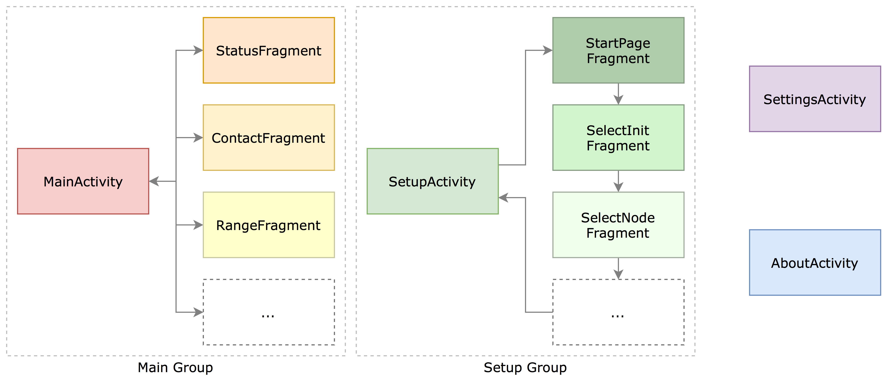
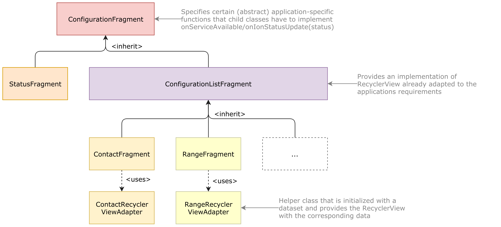

GUI
The Graphical User Interface (GUI) allows the user to configure, maintain and start/stop the underlying ION-DTN instance. In order to provide this functionality, the GUI consists of multiple activities, fragments and adapters (please refer to the Android documentation to learn more about these elements).
Structure

The GUI can be organized by the activities that they belong to:
- MainActivity: Handles the start/stop procedures and the actual configuration of the node.
- SetupActivity: Creates a default or custom configuration at the first application startup and runs the user through the entire process.
- SettingsActivity: Allows the modification of key values of the Android application and the ION-DTN instance that are not part of the normal configuration.
- AboutActivity: Provides some information about the application.
Configuration Fragments
In order to minimize redundant code in the provider application, the configuration fragments are all implemented in a inheritance structure:

All fragments are based on the ConfigurationFragment. This fragment is inheriting functionality of the standard Fragment class and is additionally adding some application-specific abstract functions that the child classes have to provide.
The Status Fragment class is special in its behaviour and is therefore directly inheriting the ConfigurationFragment class.
The other fragments are all based on the ConfigurationListFragment. As all configuration views have to provide a list of the configured ranges/routes/outducts etc. their behaviour is excactly the same, the only difference is the dataset their working on.
The different dataset is provided by the RecyclerViewAdapters. These adapters request a current dataset from the ION-DTN instance (via the JNI) and convert the returned string into a dataset. This dataset is the GUI list element and can be shown presented to the user.
Note: Function calls to native code are very expensive in regards of resource and time consumption. Therefore the number of native function calls should be reduced to a minimum. Furthermore, instantiating Java data types in native C code is very inefficient as well. Returning a
Stringobject and then parsing theStringobject in Java is way more efficient than creating a JavaSetstructure containingIntegersandStringsin the native code.
Setup Routine
The setup routine is accomplished by the SetupActivity. This activity uses multiple fragments (which are not based on a custom Fragment parent class) that guide the user through the setup process. The process and the corresponding Fragments of the process is shown in the following diagram:

All fragments and their operations are designed in a way to be self-explanatory. The actual configuration file generation depends on the settings that the user chooses in the Fragments of the SetupActivity.
The easiest way to create a set of configuration files for all ION-DTN administration programs is to choose the empty configuration. This configuration creates minimal configuration files that only ensure that the administration deamon programs are started properly. The users have to add routes/contacts/outducts etc. on their own.
The second option is to select the custom configuration. In this case, the user has to provide a standard .rc configuration file that is used to initialize ION-DTN on the first startup. On all subsequent startup an empty startup configuration file set is used. As the configuration is stored in persistent memory, a new initialization is not necessary.